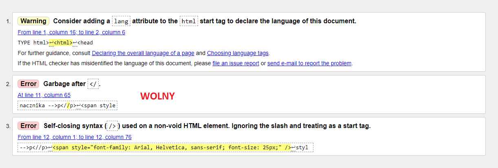
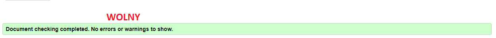

Walidator to program (może być aplikacja Web, czyli strona WWW) sprawdzający poprawność
dokumentu o określonej skladni, np. walidator kodu HTML, walidator kodu CSS. Pomyślnie
przejscie walidacji oznacza zwykle, że kod został napisany zgodnie z gramatyką (składnią)
danego języka. Walidatory potrafią, wskazać miejsce błędu oraz podać przyczynę
błedu->mogą podawać numer błędu.
Link do walidatora- http://validator.w3.org/
Przed naprawą błędów

Po naprawie błędów
